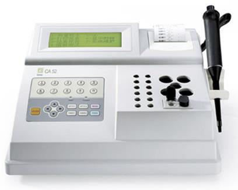

Technologies d'hématologie et d'hémostase
L'hémogramme
L'examen le plus prescrit (NFS). Une partie est mesurée, l'autre calculée :
- Mesurés : GR, GB, PLT, Hb, VGM.
- Calculés : Ht, TCMH, CCMH, IDR.
Unités : GR en 10¹²/L, Hb en g/dL, VGM en fL, Ht en %, TCMH en pg. Histogramme des GR : une cloche centrée sur le VGM (environ 90 fL) ; plus elle est large, plus l'IDR est grand.
L'impédance (principe de Coulter)
Le sang dilué dans un liquide conducteur passe par un micro-orifice entre deux électrodes. Chaque cellule fait une impulsion : on compte les impulsions, et leur amplitude est proportionnelle au volume.
- Seuils : plaquettes 2 à 20 fL, bruit 20 à 35 fL, GR 35 à 360 fL.
- Coïncidence : deux cellules ensemble comptent pour une ; correction \( N_c = N_m \, e^{N_m \tau} \).
- Référence pour GR et plaquettes ; ne différencie pas finement les GB ; sensible aux agrégats et aux fragments.
La cytométrie en flux
Le liquide de gaine aligne les cellules une par une devant un laser (488 nm).
- FSC (0 à 10°) : la taille.
- SSC (90°) : la granulosité.
- Fluorescences FL1 à FL4 : acides nucléiques, ARN, ADN, marquages.
FSC/SSC séparent 3 populations (lymphocytes, monocytes, granulocytes) ; avec la fluorescence, 5 (neutrophiles, éosinophiles, basophiles en plus). L'hémoglobine se dose par spectrophotométrie à 525 à 550 nm après lyse.
L'automate d'hématologie

Types : impédance (Sysmex KX-21), optique (CELL-DYN, ADVIA), mixtes (la majorité des modernes : Sysmex XN, DxH). Paillasse : moins de 60 tests/h ; grande série : plus de 100 tests/h.
Perspectives : intelligence artificielle (deep learning sur images), miniaturisation et POCT, connectivité et cybersécurité, harmonisation. Repères : 1980 impédance (3 populations), 1990 optique et cytochimie (5 populations), 2000 fluorescence et réticulocytes, 2010 chaînes, 2020 IA, 2026 automates connectés.
Bonnes pratiques : EDTA K2/K3, analyse en moins de 4 h, 20 à 25 °C, retournements doux. Onduleur avec terre, 50 cm du mur, 10 min de chauffe, pas de bulles dans les tuyaux.
| Fréquence | Maintenance |
|---|---|
| Jour | nettoyage, contrôle de qualité, réactifs |
| Semaine | sondes, pompes, bacs de mesure |
| Mois | filtres, calibration |
| Semestre | cordons des pompes |
| An | maintenance constructeur, métrologie, tuyaux, joints |
Qualité et interférences
CQ interne : au moins 2 niveaux (normal, pathologique), règles de Westgard, graphique de Levey-Jennings.
| Interférence | Effet | Pourquoi |
|---|---|---|
| Agrégats plaquettaires | PLT ↓ GB ↑ | amas comptés comme GB |
| Hyperlipémie, bilirubine | Hb ↑ | trouble ou absorbance parasite |
| Schizocytes | PLT ↑ | fragments de la taille d'une plaquette |
| Cryoglobulines | GB ↑ Hb ↑ | précipitation |
| Caillots | GR ↓ PLT ↓ | échantillon non homogène |
| Dilution (perfusion) | tout ↓ | prélèvement non conforme |
Vérifier si GB < 2,0 × 10⁹/L, PLT < 50 × 10⁹/L (lame), Hb < 7 g/dL. L'automate mesure, le biologiste interprète et reste le garant.
L'hémostase
Hémostase primaire : vasoconstriction, adhésion (le facteur de von Willebrand relie collagène et plaquettes), activation, agrégation (ponts de fibrinogène) : le clou plaquettaire.
- Prothrombinase (Xa, Va, phospholipides, Ca²⁺) : 100 000 fois plus active que le Xa seul.
- Vitamine K : facteurs II, VII, IX, X (les AVK les bloquent).
- EDTA et citrate captent le Ca²⁺ : le sang ne coagule pas dans le tube.
- Rôles des facteurs : zymogènes (II, IX, X, XI, XII, PK, XIII), cofacteurs (V, VIII), récepteur (FT), substrat (fibrinogène), transporteur (KHPM).
- Système contact (voie endogène) : XII, prékallicréine, KHPM, XI ; leur déficit (XII, PK, KHPM) ne fait pas saigner gravement.
- Inhibiteurs : antithrombine (renforcée par l'héparine ; son déficit donne des thromboses à répétition), protéines C et S, TFPI.
- Fibrinolyse : la plasmine (activée par le tPA) dégrade la fibrine en PDF.
L'endothélium, six rôles : libérer le facteur de von Willebrand, le facteur tissulaire, la thromboxane A2 et le PAF, le PAI-1, le tPA ; synthétiser les protéines C et S. Après la ménopause, le PAI augmente : fibrinolyse moins efficace, plus de thromboses.
Les analyseurs de coagulation
Ils mesurent TP, TCA, fibrinogène, facteurs, inhibiteurs, dans des cupules à usage unique (pas de contamination croisée).
- Viscosimétrie : une bille magnétique s'arrête quand le caillot se forme ; insensible à l'ictère et à l'hémolyse.
- Chromogénique : un substrat libère une couleur jaune (pNA) ; antithrombine, facteur Xa.
- Immunologique : latex et turbidité ; D-dimères.

L'ISI est propre à chaque lot de réactif : l'INR rend le suivi des AVK comparable d'un laboratoire à l'autre. Fibrinogène (Clauss) : plus il y en a, plus le caillot est rapide (droite log-log).
Questions d'examen
Réponds dans ta tête, puis touche « Voir la réponse ».
1. Quels paramètres de l'hémogramme sont mesurés, lesquels sont calculés ?
Voir la réponse
Mesurés : GR, GB, plaquettes, hémoglobine, VGM.
Calculés : hématocrite, TCMH, CCMH, IDR.
2. GR = 5,0 × 10¹²/L et VGM = 84 fL. Quel hématocrite ?
Voir la réponse
\( \text{Ht} = \text{GR} \times \text{VGM} / 10 \)
\( \text{Ht} = 5{,}0 \times 84 / 10 \)
\( \text{Ht} = 42 \) %
3. Explique le principe de Coulter en deux phrases.
Voir la réponse
Chaque cellule qui passe dans le micro-orifice augmente un instant l'impédance : une impulsion par cellule, on les compte.
L'amplitude de l'impulsion est proportionnelle au volume de la cellule.
4. Une impulsion correspond à 15 fL. Qu'est-ce que c'est ? Et à 90 fL ?
Voir la réponse
15 fL : une plaquette (2 à 20 fL).
90 fL : un globule rouge (35 à 360 fL).
5. En cytométrie en flux, que mesurent FSC et SSC ?
Voir la réponse
FSC, diffusion vers l'avant : la taille.
SSC, diffusion à 90° : la granulosité.
6. Plaquettes basses et GB un peu hauts chez un patient qui ne saigne pas. Que soupçonnes-tu, et que fais-tu ?
Voir la réponse
Des agrégats plaquettaires, comptés comme des globules blancs.
Contrôle sur lame (PLT < 50 × 10⁹/L).
7. Cite les trois temps de l'hémostase avec leur durée.
Voir la réponse
Hémostase primaire : 3 à 5 min.
Coagulation : 5 à 10 min.
Fibrinolyse : 48 à 72 h.
8. Cite trois rôles de l'endothélium dans l'hémostase. Pourquoi la ménopause augmente-t-elle le risque de thrombose ?
Voir la réponse
Il libère le facteur de von Willebrand, le facteur tissulaire, la thromboxane A2 et le PAF, le PAI-1 et le tPA, et synthétise les protéines C et S (trois au choix).
Après la ménopause, le taux de PAI augmente : la fibrinolyse est moins efficace.
9. Pourquoi le sang ne coagule-t-il pas dans un tube citrate ?
Voir la réponse
Le citrate capte le Ca²⁺, indispensable à plusieurs étapes de la coagulation.
10. TP patient 30 s, témoin 12 s, ISI 1,0. Quel INR ? Pourquoi l'ISI ?
Voir la réponse
\( \text{INR} = (\text{TP}_{\text{patient}}/\text{TP}_{\text{témoin}})^{\text{ISI}} \)
\( \text{INR} = (30/12)^{1{,}0} \)
\( \text{INR} = 2{,}5 \)
L'ISI corrige la sensibilité du réactif : il rend l'INR comparable entre laboratoires.